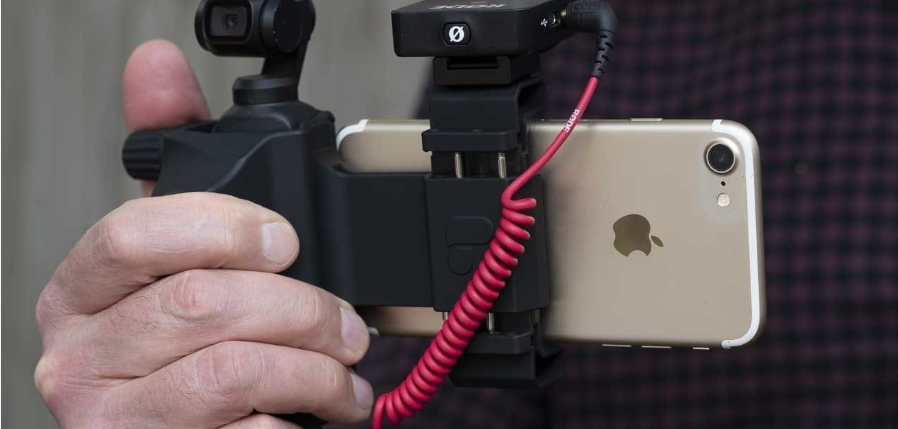
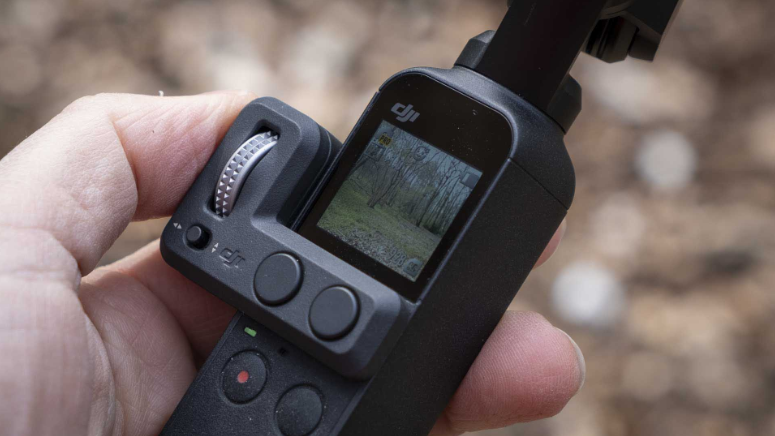
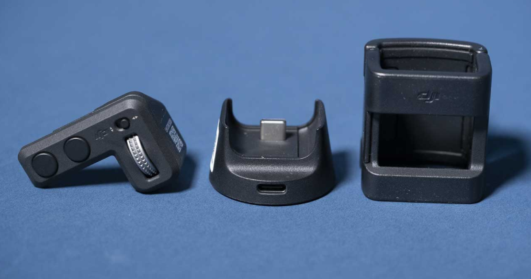
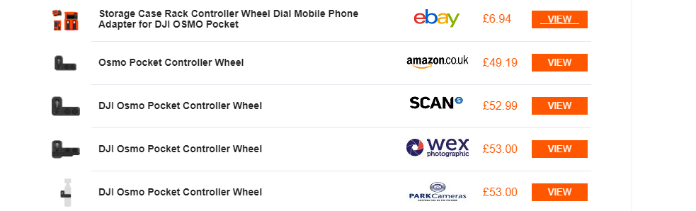
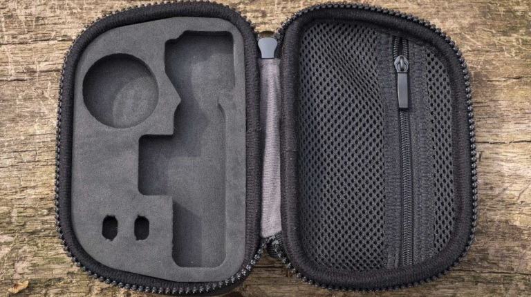
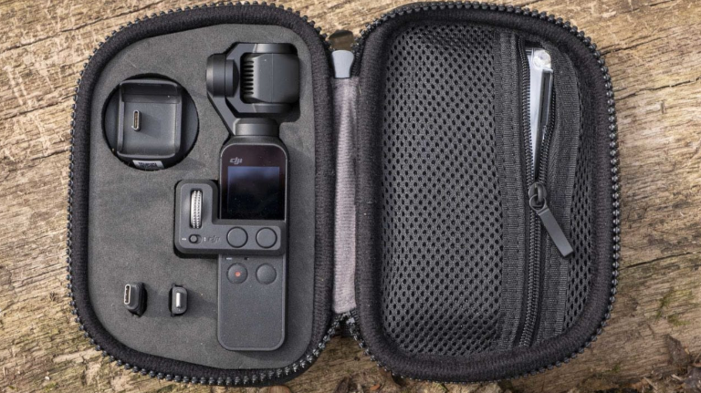
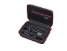

NEWS
BUYERS GUIDES
Reviews
ACCESORIES
CONTACT US
NEWS
BUYERS GUIDES
Reviews
ACCESORIES
CONTACT US
-The DJI Osmo Pocket is one of my favourite products that’s come along in recent times. I loved the GoPro
Karma Grip combined with the GoPro Hero6 Black, but the DJI Osmo Pocket takes things to another level. Part
of the reason behind that is the Osmo Pocket’s small size. You can slip it in your pocket ready to whip out and
be shooting within seconds.
Quality-wise the footage is up there with the best action cameras, if not better in some instances.
Another great thing about the DJI Osmo Pocket is that it’s easy to use. However, there are a few accessories
that can help you get a bit more from it. For example, you might want an external mic, a case or a tripod
mount. Here’s my pick of the best DJI Osmo Pocket accessories:
-1. DJI Osmo Pocket Controller Wheel
If I could only buy one accessory for the DJI Osmo Pocket it would be the DJI Osmo Pocket Controller Wheel. It
makes it far easier to pan the Osmo Pocket’s gimbal smoothly. What’s more, it has a switch so you can flick
quickly between using the wheel to pan horizontally or vertically.
Attaching the Controller Wheel means you can’t connect your phone, but with better control over the gimbal,
there’s far less need to do that.
Buy the DJI Osmo Pocket Controller Wheel on eBay for £6. Also available from Amazon (£10), Scan Computers
(£52), Wex Photographic (£53), Park Cameras (£53).
The DJI Osmo Pocket Controller Wheel is available for £53 from Wex Photo Video or $59 from Adorama, 
2. DJI Osmo Pocket Expansion Kit
The DJI Osmo Pocket Expansion Kit includes four items that can all be bought separately, but buying them
together is cheaper. The kit is made up of the DJI Osmo Pocket Controller Wheel, Wireless Module, Accessory Mount Adapter and a 32GB Samsung microSD card.
Of those items, the DJI Osmo Pocket Controller Wheel is the most useful (unless you don’t already have a microSD card).
If you want to shoot time-lapses or vlogs, the Wireless Module is another great addition. It’s basically a small
The Module’s Wi-Fi system allows you to wirelessly connect the Osmo Pocket to a smartphone running the DJI Mimo app. Once the connection is made, you can control the Pocket remotely with the usual Mimo controls. You can even transfer video and stills wirelessly.
docking station with wireless connectivity for the Osmo Pocket. Around the back, there’s a USB-C connection that slots into the Pocket’s USB-C port.
You can buy the DJI Osmo Pocket Controller Wheel for £53 from Wex Photo Video or $59 from Adorama. Meanwhile, the Wireless Module retails for £53 and $59 at the same outlets. However, Wex sells the Osmo Pocket Expansion kit for £99. and Adorama sells it for $109, making the Expansion Kit’s value very clear if you want a couple of the components.
3. PolarPro Minimalist Case
The Osmo Pocket comes with a neat little case, but it can’t hold all the components of the Expansion Kit. That’s
where the PolarPro Minimalist Case comes in. This semi-rigid case opens like a clamshell to reveal the foam-filled interior that’s perfectly shaped to house everything you need.Helpfully, the Osmo Pocket space is shaped to accommodate the camera with the Controller Wheel attached. That means it’s ready to roll with a press of the power button.
There are also slots to hold both of the supplied smartphone connectors. In addition, the zip-close mesh pocket can hold a set of PolarPro’s ND filters for the Osmo Pocket, the charging cable and the DJI Osmo Pocket Mic Adapter.
The combination of the customised foam, mesh pocket and the rigid exterior make this the best case for the DJI Osmo Pocket. The PolarPro Minimalist Case is available from Amazon UK for £22.98 and Amazon US for $25.21.
Smatree Hard Carrying Case for Osmo Pocket Camera, Portable
Storage Bag for Wireless Module, Controller Wheel, Charging
Case and Other Accessories